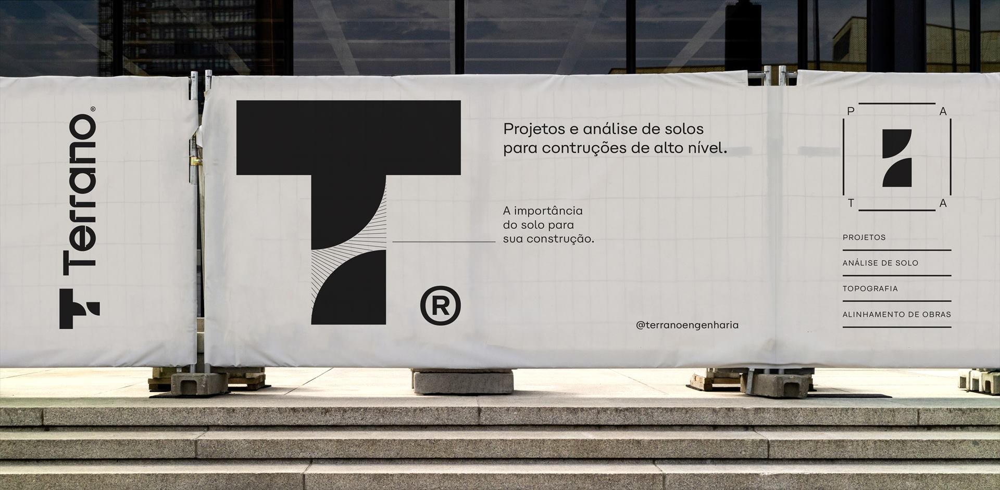

Aqui tudo é planejado, do solo até a obra.
A Terrano reúne construtora, sondagem de solo, topografia e controle tecnológico de concreto em uma só empresa. Sua obra começa com o terreno entendido — e termina entregue com qualidade comprovada.
Engenharia integrada, do primeiro estudo à última laje.
Quatro frentes que se complementam. Contrate só o serviço que precisa — ou tenha a obra inteira com uma única equipe responsável.
Construtora Terrano
Obras residenciais, comerciais e reformas executadas com a mesma engenharia que estuda o seu terreno. Planejamento, orçamento claro e controle de qualidade em cada etapa.
02Sondagem de Solo
Sondagem SPT conforme NBR 6484, com laudo técnico e ART para dimensionar a fundação com segurança.
03Topografia
Levantamentos planialtimétricos, locação de obra, georreferenciamento e mapeamento com drone.
04Controle Tecnológico
Moldagem e rompimento de corpos de prova de concreto, graute e argamassa, com relatórios por lote.
—Não sabe por onde começar?
Conte sobre o seu terreno ou projeto. Indicamos os estudos necessários e montamos o orçamento.
Uma construtora que nasceu da engenharia.
Antes de construir, a Terrano já mediu, perfurou e ensaiou terrenos e estruturas em toda a região. Essa bagagem técnica agora está a serviço da sua obra — com menos surpresas, mais previsibilidade e qualidade que pode ser comprovada.
- 01Residências e obras de alto padrão
- 02Edificações comerciais e industriais
- 03Reformas, ampliações e retrofit
- 04Gestão e execução de obras
Do solo até a obra, sem trocar de mãos.
Cada etapa alimenta a próxima com dados reais. É assim que a obra sai do papel com custo previsível e estrutura segura.
Conhecer o terreno
Levantamento planialtimétrico, limites e níveis. A base precisa de qualquer projeto.
Entender o solo
Sondagem SPT para definir a fundação certa — nem superdimensionada, nem arriscada.
Planejar e executar
Orçamento detalhado, cronograma e execução com equipe própria e gestão transparente.
Comprovar a qualidade
Ensaios do concreto aplicado na obra, com relatórios que garantem o que foi projetado.
Construções de alto nível com tecnologia de ponta.
Uma equipe, a obra inteira
Topografia, sondagem, execução e ensaios com o mesmo time técnico. Menos ruído, mais responsabilidade.
Decisões baseadas em dados
Projeto e fundação definidos a partir de medições e ensaios reais do seu terreno — não de estimativas.
Qualidade comprovada
Controle tecnológico próprio do concreto: o que foi especificado em projeto é o que está na estrutura.
Responsabilidade técnica
Serviços com engenheiros habilitados, ART e laudos dentro das normas da ABNT.
Tecnologia em campo
GNSS RTK, estação total, drone e nuvem de pontos para levantamentos rápidos e precisos.
Prazo e transparência
Cronograma acompanhado de perto, relatórios periódicos e comunicação direta com o engenheiro.

Projetos · Análise de solo · Topografia · Alinhamento de obras
Engenharia que começa pelo chão.
Sediada em Foz do Iguaçu, a Terrano reúne construção civil, sondagem de solo, topografia e controle tecnológico de concreto numa só empresa. Atendemos construtoras, incorporadoras, órgãos públicos e proprietários em toda a região.
Conheça a TerranoVamos tirar o seu projeto do papel?
Envie as informações básicas e retornamos com orçamento ou com a indicação dos estudos que o seu terreno precisa.
Chamar no WhatsApp- WhatsApp(45) 99937-1887
- E-mailcontato@terranoengenharia.com
- Instagram@terranoengenharia
- EndereçoRua Ali Osman, 222 — Jardim Panorama
Foz do Iguaçu — PR